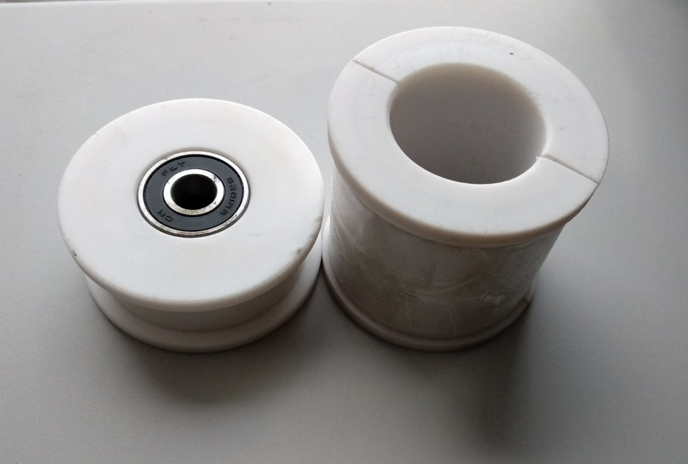
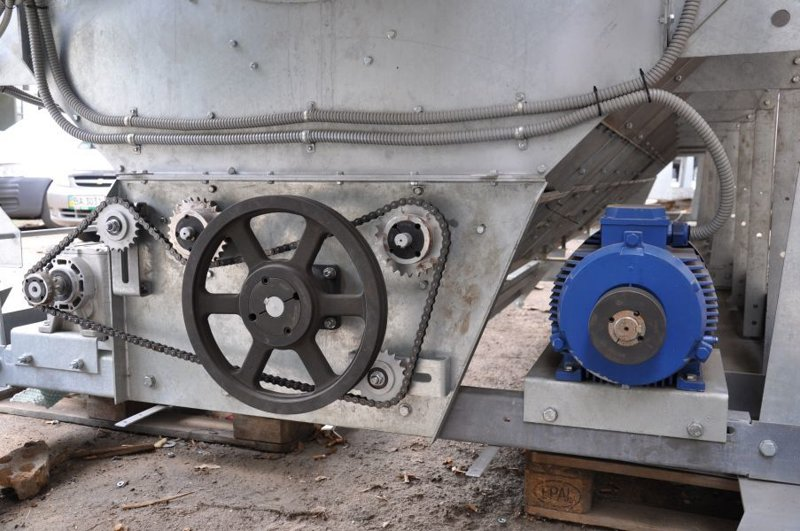
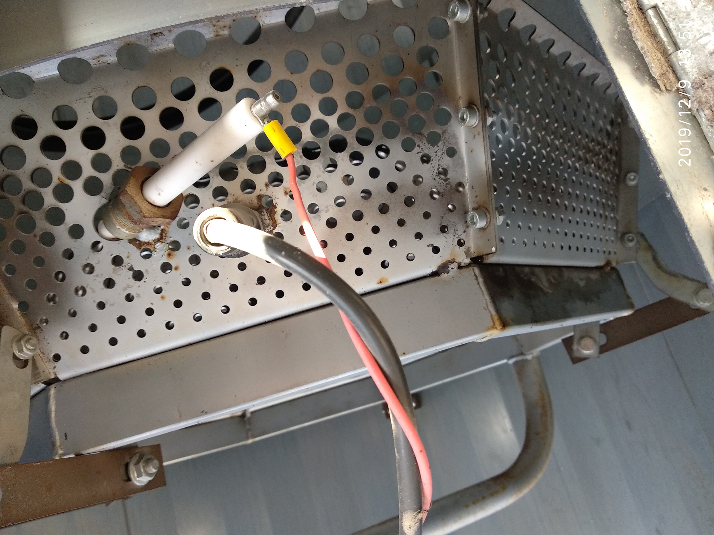

ЗАПАСНІ ЧАСТИНИ ТА КОМПЛЕКТУЮЧІ
Постійно в наявності та під замовлення оригінальні та не оригінальні запасні частини для зерносушарок американського, турецького та українського виробництва. Ми забезпечуємо повну технічну підтримку та швидку заміну необхідних вузлів.

фторопластові втулки

механізм приводу нижнього шнека та дозаторів

електрична шафа керування зерносушаркою

вузол розпалу та контролю полум'я пальника
Газове та теплове обладнання
- Електромагнітні клапани Madas, ACL, котушки та конектори;
- Регулятори тиску пропан-бутану (редуктори) Novacomet;
- Газові вентилі, гнучкі патрубки та магістралі у зборі;
- Дифузори пальників, випаровувачі рідкої фази;
- Температурні датчики зерна і агента сушіння;
- Датчики наявності полум'я та трансформатори розпалювання Danfoss.
Електроніка та автоматика
- Блоки керування пальниками Siemens;
- Автоматичні вимикачі, блоки реле Schneider, CHINT;
- Частотні перетворювачі та пуско-захисні пристрої;
- Реле контролю фаз, проміжні та кінцеві вимикачі;
- Електричні шафи та пульти керування у зборі.
Механічні вузли та приводи
- Електричні двигуни та мотор-редуктори;
- Фторопластові втулки шнеків та дозуючих вальців;
- Шнеки, шківи, дозуючі вальці;
- Решета для зерносушарок та промислові вентилятори;
- Приводні ланцюги, ремені та інші комплектуючі.